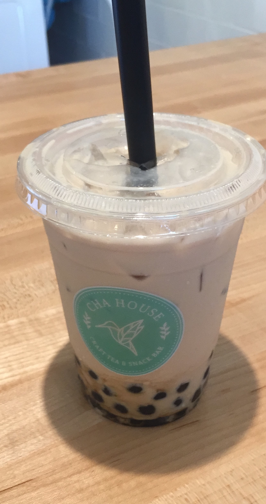

By the end of May 2018, multiple new restaurants had opened in Chapel Hill that were unlike any currently established. Taiwanese boba tea shop Cha House and Japanese chain Yaya Tea opened in April and May, respectively, along with the Korean fried chicken restaurant, Bonchon, in late January.
Franklin Street is a constantly evolving commercial hub. According to Multicultural Strategist Iris Yim of self-started business Sparkle Insights, there are multiple reasons for this new change in taste.
“In terms of trends…it could be due to two reasons,” said Yim. “One is that because it’s a college town and it’s in an area that has a high concentration of universities and there are a lot of international students coming from China. China is (the) number one source of international students in the U.S.”
Additionally, Yim said, it is “relatively more affordable than the West Coast.”
Demographic reports from recent years support these trends. According to The Pew Charitable Trusts, Asian populations increased by 80 percent from 2000 to 2010. According to Data USA, this growth has made Asians the largest minority in Chapel Hill, at 12.6 percent of the population in 2016.

According to the Asian Americans Advancing Justice website, “Asian Americans and NHPI (Native Hawaiians and Pacific Islanders) are the fastest-growing racial groups in the South.”
Data USA also reported that Chapel Hill residents of Asian descent make the most income on average at $75,097, and often work in high-level medicine-related professions.
A prime example of the new business-owners drawn to the town, Andy Adkisson started Cha House with his wife, Ya Wen Chui, and sister-in-law, Ya Huei Chiu, after living in Taiwan for several months.
Adkisson said he “wanted to bring a piece of Taiwan back.” They were looking for the perfect location to set up their Taiwanese-style boba tea shop and decided on Chapel Hill.
“We’re new to town. Had we gone to Houston or Phoenix,” Adkisson said. “There’d be more competition, but there’d also be more resources.”
Regarding available resources and representation for their kind of business, Adkisson said, “No. Simply no. We had planned from the get-go to import from Taiwan…it just remains that our resources are in Taiwan.”
Adkisson said the only help they’ve received so far in setting up the shop was from their landlord and occasional customers that offered local business tips for the area.
Evidently, while there has been tremendous increase in Asian population, there hasn’t been the same growth in representation. While Yim cited organizations like Asian Americans Advancing Justice and the NC Chinese Chamber of Commerce, in Chapel Hill, organizations like these are hard to find.
Chapel Hill Town Councilwoman and Assistant Professor in the Department of Psychiatry at UNC School of Medicine Dr. Hongbin Gu dealt with multiple issues when she ran for office in fall 2017.
According to the Orange County Board of Elections in an article in the Herald Sun, Gu is one of three Asian-Americans to ever have run for office in Chapel Hill. According to Indy Week, during her election process, her campaign mailbox was mysteriously shut down, her campaign Facebook page indicated campaign signs were torn down and the Herald Sun reported that she received backlash because she was foreign-born—even though she had lived in the U.S. since 1995 and became a citizen in 2015.
According to the Town of Chapel Hill website, Gu is a board chair with the Chinese School at Chapel Hill, and is highly involved with campus organizations, with an active social media presence supporting Asian cultural events like the 2018 Triangle-Area Asian American Student Conference.
Gu says there’s “still a very long way to go” for representation, even with her election to town council.
In her work with the Chamber of Commerce, Gu said “there is no support…they have never organized any activities…very few town staffs that are from the Asian community…none of them…even at the middle management level, are from the Asian community.”
On the other hand, Gu said there is “strong interest in the community” culturally, exemplified by the 6,000 attendees for the Chinese New Year LIGHTUP event she helped organize.
Gu said that there is a dual responsibility for “Asian communities to be more outgoing” and the “town…to do more outreach…to the benefit to everyone of this town.”
However, business owners like Adkisson don’t allow this lack of resources to dictate their experiences.
“If we could do it all over again, we would still come to Chapel Hill,” Adkisson said. “We kind of fell in love with this place and then, we like the idea of being the first ones in town.”